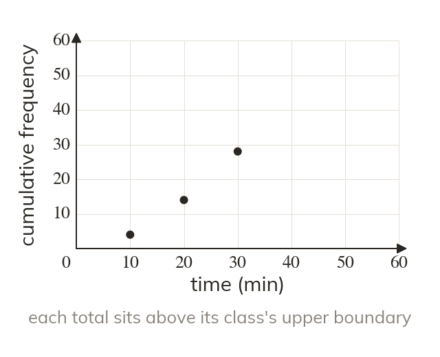
Plot at the upper boundary
Each cumulative frequency is plotted at its class's upper boundary. The for goes at
A cumulative frequency graph turns the table into a curve. From the curve, 'how many were below minutes?' can be answered for any value, not just at the class boundaries.
Work down the page at your own pace. Write every answer in your book first, then click to check it.
Read each card, then follow the worked examples one step at a time.

Each cumulative frequency is plotted at its class's upper boundary. The for goes at
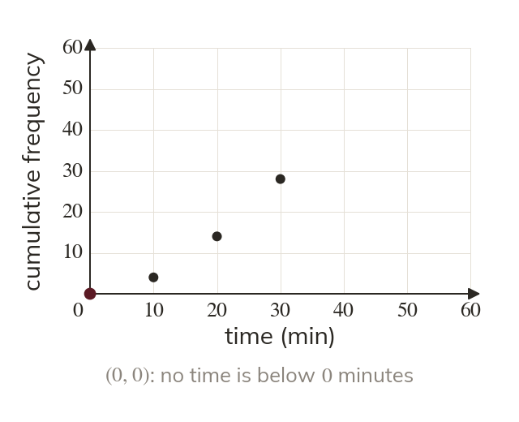
The graph starts at the lowest boundary with cumulative frequency
No values lie below it.
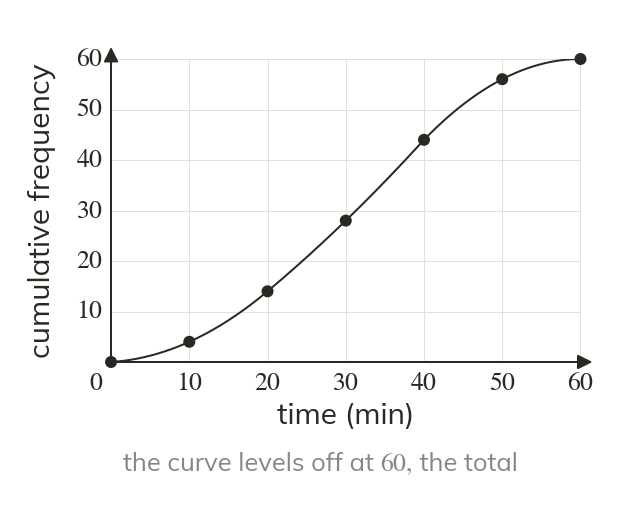
A smooth curve joins the points, rising and then levelling off. It levels off at the total frequency,
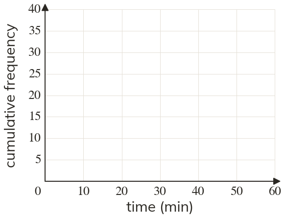
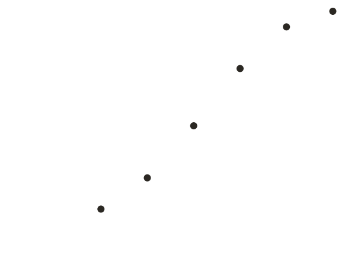
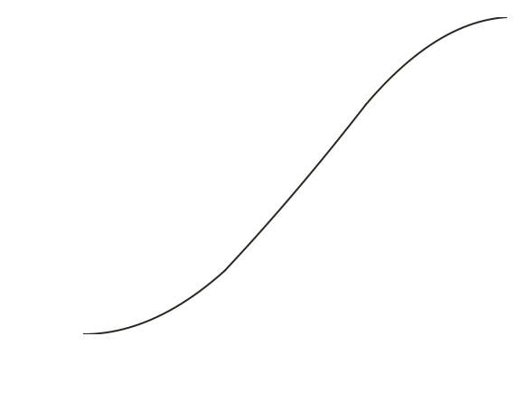
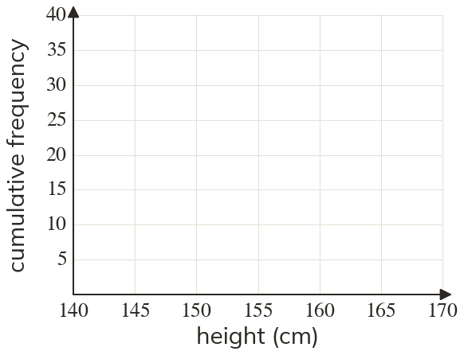
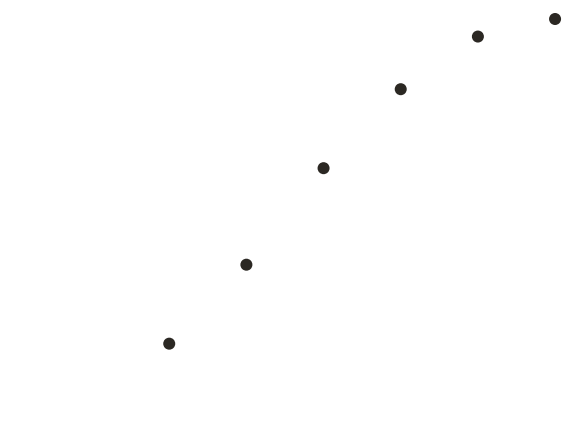
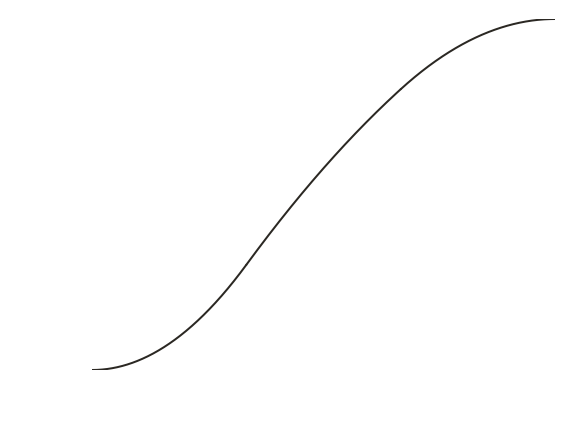
Pick an answer. If it's wrong, the feedback tells you which mistake it was.

Printable worksheet — the questions with room to work.
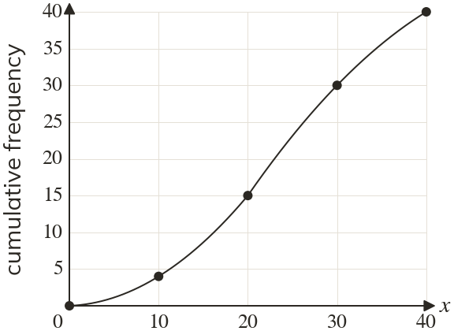
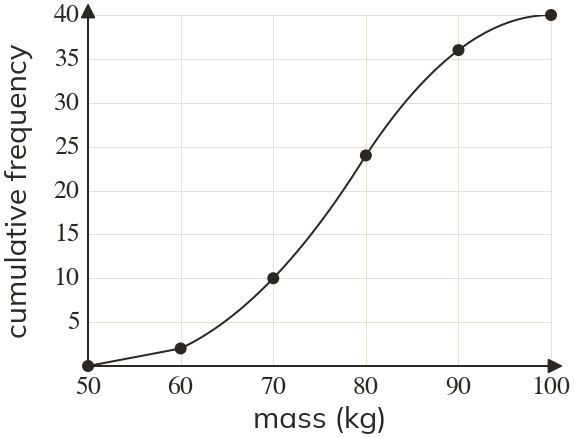
Read each card, then follow the worked examples one step at a time.
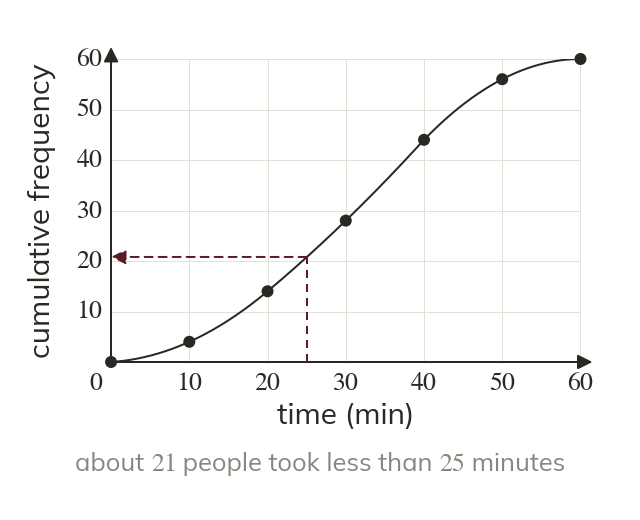
To count the values below a value, read up to the curve, then across. Up from minutes, the curve gives about
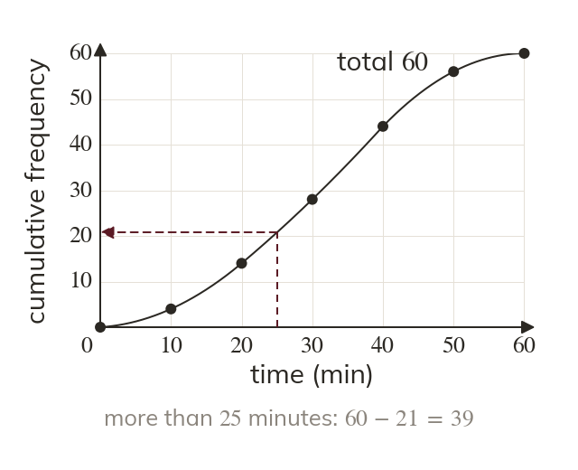
The number more than a value is the total minus the reading. So about took over minutes.
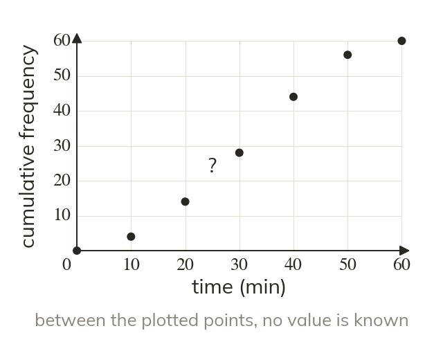
The curve guesses how the values spread inside each class. So a reading is an estimate, not an exact count.
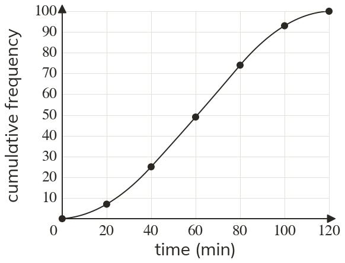
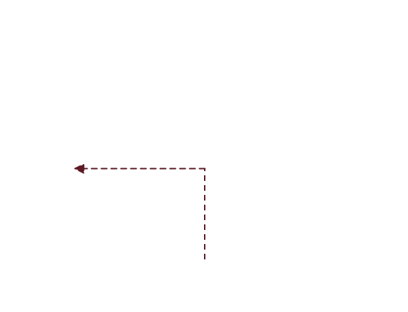
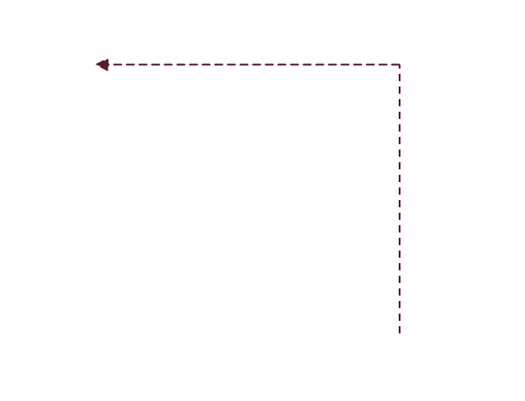
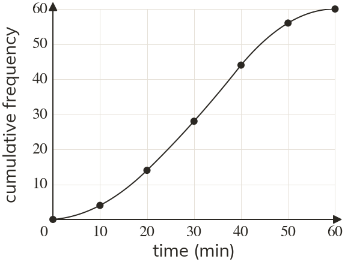
Pick an answer. If it's wrong, the feedback tells you which mistake it was.
Printable worksheet — the questions with room to work.
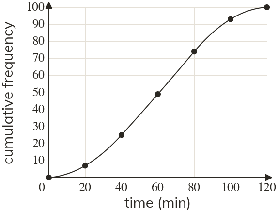
Finished? Next lesson: 10H.16.5 Finding Key Values from a Cumulative Frequency Graph.
For each skill, tap the one that is true for you today. Your Revise pages start with anything you mark Not yet.
Your ratings are saved on this device only.
Log in, then search for a code to practise that skill.
Videos, worksheets and more on each part of this lesson.